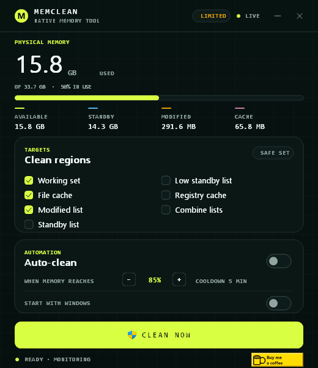

Working sets
Empty the working set of every process so pages return to the system.
NATIVE MEMORY TOOLC23 · Win32
MemClean frees working sets, flushes the file cache, and purges standby lists from one small window. No runtime, no installer, no noise.

Small by design
The window is compact on purpose. Every control maps to a real Windows memory operation, and every operation reports back in plain text.
Empty the working set of every process so pages return to the system.
Flush the system file cache when disk-backed pages are not needed.
Purge the standby list, or only the low-priority portion, to reclaim cached memory.
Flush registry hives and combine memory lists on supported Windows builds.
Run automatically when memory load crosses your threshold. A cooldown keeps it calm.
The desktop window and the scriptable CLI share the same engine and result format.
Functional core · imperative shell
The domain logic is a pure C core: flag parsing, settings, masks, auto-clean decisions, and formatting. The shell owns Win32, GDI+, the registry, and process creation.
> memclean-cli status
Memory
physical total: 31.7 GB
physical available: 17.2 GB
> memclean-cli clean --all --force
Clean
working set: failed (STATUS_PRIVILEGE_NOT_HELD)
standby list: failed (STATUS_PRIVILEGE_NOT_HELD)
> memclean-cli clean --safe
Clean
working set: ok
file cache: ok
modified list: okFrom window to clean
Open the app, choose what to free, and press the big lime button. Or skip the window and call the CLI.
Start with the safe set, or enable standby, registry, and combine.
The app launches an elevated worker and keeps the window responsive.
Each region reports ok or a named NTSTATUS failure. No guessing.
Set a threshold and cooldown. MemClean cleans while you work.
Windows 10 / 11 · x64
Both binaries are portable. Cleaning needs administrator rights; the CLI can still report status without elevation.
MemClean for Windows
The full window: memory readout, region picker, auto-clean, tray, and startup.
Download memclean.exeMemClean for scripts
Status and clean commands with the same engine, without a window.
Download memclean-cli.exeNo release for your setup? Clone the repository and run build.bat with GCC 15.2+ and MinGW-w64.
Support the work
If it saves you time, you can buy me a coffee. The button opens Buy Me a Coffee in your browser.
Thejuampi apps
MemClean is part of a growing set of compact native utilities.